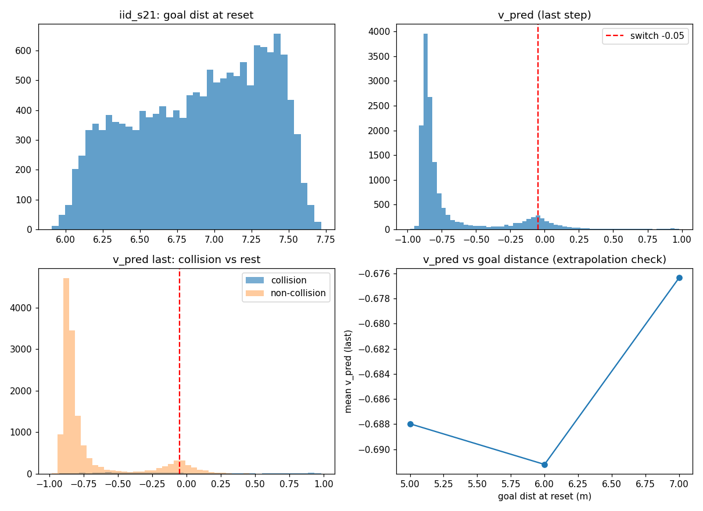
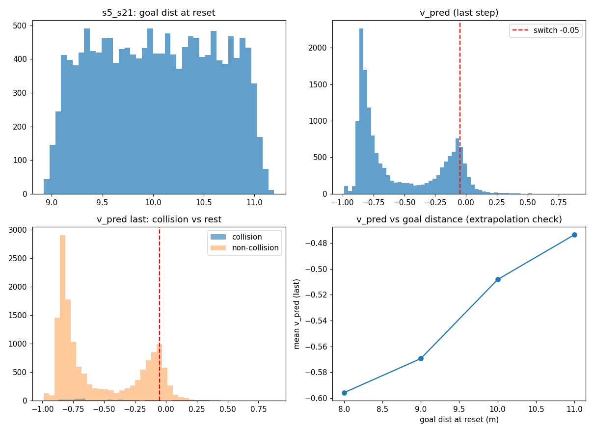

The question was whether adapting the safety value online could address the known distribution-shift failure. The paper already notes that the frozen value can fail under distribution shift, so retraining it from the robot's own experience was a direct next step.
The Original ABS System
"Agile But Safe" (RSS 2024, arXiv:2401.17583) is a system for making a legged robot both fast and safe. The core idea is simple: you cannot make one policy that does both. So you train two.
The agile policy runs fast toward goals. The recovery policy is slow and conservative. It knows how to back away from obstacles. The glue between them is a small neural network (19 inputs to 64 to 64 to 1, Tanh output) that outputs a safety value. If that value crosses -0.05, the system switches to recovery. Below the threshold, the agile policy drives.
Within the conditions it was trained for (goals 1.5 to 7.5 meters away, per the paper and the released configuration), this works. The released testbed exercises the 6 to 7.5 meter band, and in reproduction runs the recovery policy cuts collisions from ~18% (with no safety value at all) to ~5%, close to the paper's reported effect. The paper's failure-cases section limits its own guarantee: in its words, the policy switch can push the safety value's inputs outside the distribution it was trained on. In those runs, that failure appeared concretely under far-goal shift, with goals much farther away than the trained range.

Stratified analysis of the frozen RA value across goal-distance bins. The plot shows how value predictions and collision rates change as the robot operates farther from the goal. Source: project diagnostic data.
Experimental Setup
The released ABS implementation was reproduced end-to-end on the official code (Isaac Gym, Unitree Go1 simulation). The reproduction was at smoke scale: ~1,000 parallel environments, ~7,000 steps per held-out evaluation seed, 420-second runs. This is not the paper's full-length evaluation.
The safety value network (RA value) takes 19-dimensional input: base linear velocity (3), base angular velocity (3), goal position in body frame (2), and 11 log ray distances. Architecture is a 3-layer MLP with a Tanh head. Training uses a Bellman-MSE loss with a near-unit discount (gamma = 0.999999) and hindsight relabeling. When a collision happens, the last 10 steps get relabeled as risky.
For the adaptation study, the backbone was frozen and only the final linear head (65 parameters) was trained. The robot collected data with the recovery switch disabled (recovery-OFF), so it saw the full consequences of its actions. The adaptation used SGD with a 1:1 mix of online and replay data, L2 regularization toward the frozen head, and ran for 3 rounds of 45,000 environment steps each.
Evaluation used held-out seeds 23, 24, 25. These were never touched by any training or calibration decision. Two independently selected base policies were tested (seed-0 at checkpoint 3000, seed-1 at checkpoint 2000, both passing the same predeclared selection rule).
Changes
The original ABS implementation was treated as the baseline. The following were added around the baseline:
- Recovery-OFF rollout collection (the robot experiences full consequences without the safety switch intervening).
- Deterministic replay construction from the IID rollouts (2M tuples, frozen head used to recompute targets).
- Frozen-backbone / 65-parameter head-only adaptation loop.
- Online + replay 1:1 training mix with L2 regularization toward the frozen head.
- Evaluation and diagnostic tooling (per-step value logging, false-safe attribution, held-out seed protocol).
- Three repair experiment families: replay/content, target formulation, decision rule.
- Second-base-policy replication pipeline (fresh base policy, fresh RA, fresh data, fresh adaptation, fresh threshold fit).
The original ABS code was never modified. All adaptation logic ran in external scripts that re-executed the environment loop with the adapted head.
Online Adaptation: Frozen vs Adapted
First, the frozen safety value was measured under far-goal shift (goals 9 to 11 meters, called S5) and under everyday, in-distribution conditions (called IID). The head was then retrained online and the adapted version evaluated on the same held-out seeds. The adapted head is labeled O/O: it was trained on a 1:1 mix of offline replay and online data, both collected with the recovery disabled.
| Metric | Frozen | Adapted (O/O) |
|---|---|---|
| Everyday (IID) false-safe | 0.060% | 0.404% |
| Far-goal (S5) false-safe | 0.974% | 0.010% |
| Everyday reach | 79.3% | 82.7% |
| Far-goal reach | 50.9% | 62.0% |
False-safe = collision episodes where the safety switch never fired.
Adaptation fixed the far-goal problem almost perfectly. But it created a new everyday-safety problem. Everyday false-safe rose about 7x. A clean IID vs far-goal trade-off appeared.

Per-step value distributions and collision attribution for the IID condition. The frozen RA shows clear separation between collision and non-collision steps.

Per-step value distributions and collision attribution for the far-goal (S5) condition. Note the inverted ordering: the value map no longer ranks collision steps as more risky.
Mechanism: Value-Map Ordering Failure
At first this looked like a calibration problem: the threshold just needs to move. Recalibration does move the operating point, as the fitted-threshold result shows later, but it does not fix the ordering problem underneath.
With a near-unit discount, the Bellman targets are almost entirely the network's own predictions. Only about 0.2% of the training data carries a grounded "this is dangerous" label. These are the collision cases, relabeled by hindsight. That tiny signal gets pushed through a 65-parameter linear head, which cannot localize it to the states where it matters. So it smears the whole value map downward.
The bulk of the map drifts below the switch threshold (frozen mean -0.72 to adapted -0.84). The decision region around the threshold empties out (activation drops from 7.6% to 4.4% per step). The switch starts missing ordinary dangerous situations. 74-77% of everyday collision steps happen with the switch off.
The initial degradation came from the value map shifting around the switch boundary. Changing the switch threshold could move the operating point, but in this tested setup it did so at the cost of useful behavior.
Repair Experiments
Three intuitive repair directions were tested. Each once. Each with predeclared gates.
1. Better training data
The causal factor is the replay's collision content, so two ways to change the data were tested. Enrich the replay with collision cases while keeping the original state distribution: pooled everyday false-safe stayed at 0.47% (per-seed 0.41 to 0.53%). Reweight replay states to match the original distribution: 0.38%. Neither moved the everyday penalty away from the 0.40% level of the standard adaptation. The data content is the cause, but changing the data content does not fix the everyday degradation.
2. Repair the training target
Anchor the target to the frozen prior (hard clamp or soft blend). Soft blend: inert. Hard clamp: the mechanism worked, the map came back, but it overshot. Recovery fired on 92 to 99.6% of episodes. Far-goal reach collapsed to about 1% and timeouts reached 92%. False-safe fell to 0.000%, but the gain was vacuous: total collisions rose above the frozen baseline (7.1% everyday, 6.6% far-goal). The robot just hid in recovery.
3. Smarter switch rules
A threshold fitted on calibration data. Episode-level persistence (once recovery fires, keep it on for the episode). The best admissible threshold still left everyday false-safe at 0.25%, above the 0.20% gate. Persistence changed nothing (everyday false-safe moved by less than 0.01 percentage point), and it could not rescue the frozen head's far-goal failure either.
The three repair directions tested (data, target, decision rule) each failed on at least one predeclared gate.
Independent Replication: Second Base Policy
The remaining question was whether this was specific to one checkpoint.
The entire pipeline was run on a second, independently trained base policy. Fresh safety value, fresh data buffer, fresh adaptation, fresh threshold fit, same held-out seeds.
| Metric | Instance #1 (seed-0) | Instance #2 (seed-1) |
|---|---|---|
| Everyday (IID) false-safe, adapted | 0.404% | 0.619% |
| Far-goal (S5) false-safe, adapted | 0.010% | 0.088% |
| Everyday reach, adapted | 82.7% | 79.7% |
| Far-goal reach, adapted | 62.0% | 77.8% |
The same qualitative trade-off appeared again. The far-goal safety gain reproduced. The everyday penalty reproduced. This time on a second, independently selected base policy, so it was not specific to the first checkpoint. By the predeclared gate set, the full replication was not confirmed in one respect: the fitted-threshold floor from the first instance did not reproduce. That surprise is the subject of the next section.
Operating Point: The Threshold Surprise
A fresh switch threshold was then fitted for the second instance (on calibration data only). The fitted threshold dramatically reduced everyday false-safe (0.619% to 0.032%) and far-goal false-safe (to 0.000%).
But the cost was severe:
| Metric | Per-step rule | Fitted threshold |
|---|---|---|
| Everyday false-safe | 0.619% | 0.032% |
| Far-goal false-safe | 0.088% | 0.000% |
| Far-goal reach | 77.8% | 12.2% |
| Timeouts | 17.0% | 78.2% |
| Recovery activation (steps) | 7.7% | 81.6% |
The "irreducible floor" interpretation from the first instance was rejected. Safety can be bought, but only by making the robot unusably conservative. Far-goal reach collapsed from 77.8% to 12.2%. 78% of episodes timed out. The robot almost stops moving.
The fitted-threshold outcome on the first instance gave a similar pattern (0.25% everyday false-safe at its calibration optimum, above the 0.20% gate, with reach also degraded). Two instances of the same shape: the threshold that buys safety does so by firing recovery far more often, and reach pays the price.
Mechanism Interpretation
A safety-critical switching value is only as good as the labels that pin it. With near-unit discounting and self-generated targets, the value of ordinary states is set almost entirely by its own future values. A tiny set of correct labels (the hindsight-relabelled collision steps) gets spread through a small linear head across the whole map, quietly moving the bulk of the map away from the switch boundary.
The evidence points to the value map's ordering as the main source of the degradation. The switch threshold can move the operating point, but in this setup the safety gain came at the cost of useful behavior. The method class is flanked by two failure modes:
- Depopulation: the switch misses unsafe states (everyday false-safe goes up)
- Over-activation: the robot hides in recovery (reach collapses, timeouts dominate)
The gap between them is the usable operating region. Narrow, and not found by any tested repair.
Limitations
- One task (point-goal locomotion with obstacles), one shift type (goal distance), two independently selected base policies.
- Smoke-scale evaluation depth (~1,000 environments; ~7,000 steps per held-out seed; 420-second runs). Not the paper's full-length evaluation.
- No paper-scale adaptation budget was tested.
- Capacity questions (wider head, unfrozen backbone) were explicitly not tested.
- No other tasks, other shifts, other simulators, or real robot.
- This does not prove online adaptation is unsafe in general. It characterizes a specific trade-off in this specific setup.
Conclusion
The project began by looking for a way to adapt the safety value to a new regime. The result was not a better method. The useful part was finding a trade-off that reproduced on a second base policy and understanding some of the reasons behind it. No way around that trade-off has been found.